Homework 3: Path Tracer
Overview
We built a Monte Carlo path tracer with camera ray generation, ray–primitive intersection, a bounding volume hierarchy, direct lighting, recursive global illumination, and adaptive pixel sampling. The same intersection machinery handles visible surfaces and shadow visibility. We learned that the choice of sampling distribution has a major effect on image noise even when the estimators target the same lighting integral. Indirect light also fills dark regions and transfers color between Cornell box walls.
The implementation uses Möller–Trumbore triangle tests, quadratic sphere tests, a median-split BVH, Lambertian BSDF evaluation and cosine-weighted sampling, explicit light sampling, Russian Roulette continuation, and a confidence-interval stopping test. All result images are direct -f output from the renderer. The larger comparison matrices use smaller images to limit rendering time; captions identify their actual settings. For the full-scene low-resolution images, we temporarily preserved the 480×360 camera field of view when reducing output size, then restored the original camera code.
Part 1: Ray Generation and Scene Intersection
For each pixel we jitter a camera sample within its square, then divide by image width and height to get normalized coordinates. The camera maps a sample to the canonical plane at z = -1 with x = (2u−1)tan(hFov/2) and y = (2v−1)tan(vFov/2). It transforms and normalizes this direction in world space, sets near/far clipping, traces the ray, and averages the resulting radiance over the pixel's samples.
For triangle intersection, we form two edges and use the Möller–Trumbore cross/dot products to solve for barycentric coordinates u and v and distance t. We reject negative coordinates, u+v > 1, and distances outside the ray interval. A hit lowers ray.max_t so later tests retain the nearest surface. We barycentrically interpolate vertex normals and normalize the result. A sphere is intersected by solving the ray–sphere quadratic and choosing the nearest root in range.
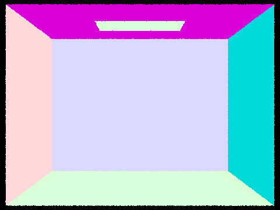
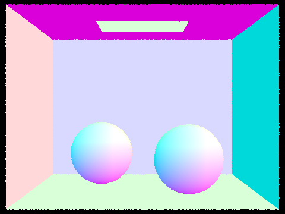
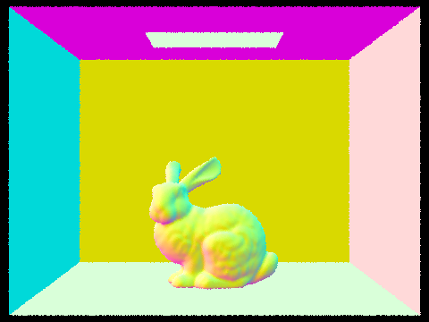
For these diagnostic images we temporarily returned 0.5n + 0.5 after the first surface hit, where n is the interpolated normal. We restored the original integrator afterward. Color changes across the curved objects show that the barycentric normals and closest-hit records are working.
Part 2: Bounding Volume Hierarchy
We union the primitives' bounding boxes to form each node. If the primitive count fits the maximum leaf size, the node stores that range. Otherwise, we choose the axis of greatest box extent, partition primitive centroids at their median with std::nth_element, and recurse. This heuristic balances primitive counts without a full sort at each node; it is not a surface-area heuristic.
Ray–box intersection clips the valid t interval against three slabs, swaps the slab endpoints for negative ray directions, and handles parallel rays separately. Traversal prunes missed boxes. The Boolean shadow query short-circuits on a hit, while the full intersection query continues to find the nearest primitive by tightening ray.max_t.
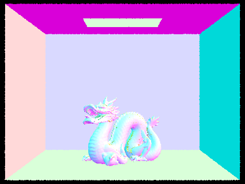
For a controlled timing comparison, we temporarily built a single-leaf version: it retains the root box but linearly tests all primitives on a ray that enters it. We rendered the same scenes at 240×180, 1 spp, 1 light sample, depth 1, and 8 threads. The times below are the renderer's own tracing time, excluding scene loading and BVH construction; then we restored the normal BVH build.
| Scene | BVH | Single leaf | Speedup |
|---|---|---|---|
| CBbunny | 0.34 s | 39.43 s | 116× |
| CBdragon | 0.33 s | 175.44 s | 532× |
Both versions produce the same visible scene, but the hierarchy rejects most primitives before an expensive triangle test. The larger dragon geometry benefits even more because the linear scan grows with primitive count. The comparison includes one root-box rejection in the single-leaf case, so it slightly favors that baseline over a fully unaccelerated scan.
Part 3: Direct Illumination
Uniform-hemisphere sampling chooses directions above the surface with density 1/(2π), traces each one, and adds the first hit's emitted radiance weighted by the Lambertian BSDF, cosine, and inverse density. Light sampling instead samples each light directly, traces a shadow ray to just before it, and adds f·L·cosθ/pdf if unoccluded. Delta lights receive one sample; area lights receive -l samples. Shadow rays begin at EPS_F to avoid self-intersection.
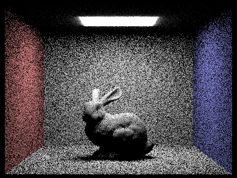
-s 1 -l 64 -m 1 -H.-H.All four shadow images use one camera sample per pixel. With more area-light samples the soft-shadow boundary becomes smoother and isolated bright/dark spots diminish. At the same nominal sample count, light sampling generally has much lower variance because it directs rays toward the small emitter. Uniform hemisphere samples often miss the emitter, leaving sparse bright hits and noisy dark surfaces.
Part 4: Global Illumination
At each hit, zero-bounce radiance is the surface's own emission. The recursive routine evaluates direct lighting, samples a direction from the BSDF, traces the next ray, and weights returned radiance by f·cosθ/pdf. After the first indirect step, each path continues with probability 0.65 and divides by that probability when it continues. The first indirect step is forced. Maximum ray depth bounds recursion; -o switches between accumulated and isolated bounce output.
-s 1024 -l 4 -m 5 -a 0 0, exactly 1024 spp.Isolated and accumulated bounces
The following images use CBbunny, 160×120, exactly 1024 spp with adaptive stopping disabled (-a 0 0), and one light sample. Bounce 0 shows source emission; bounce 1 is directly lit surfaces. Bounce 2 brings light into areas missed by direct illumination, and bounce 3 adds weaker color transfer and fills darker regions. These multi-surface paths are absent from a basic rasterization pass. Accumulated images become more complete as higher-order contributions are added.
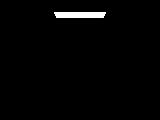
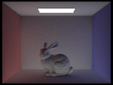
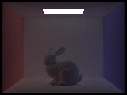
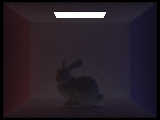
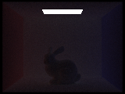
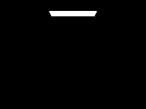
Russian Roulette and pixel sample counts
The accumulated depth 0–4 images above and depth 100 below compare Russian Roulette renders at exactly 1024 spp. Depth 100 remains finite because most long paths terminate probabilistically; allowing longer paths retains small higher-order contributions.
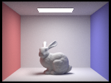
-s 1024 -l 1 -m 100 -a 0 0.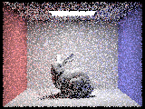
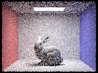
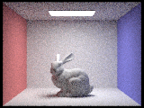
These seven images use 160×120 output, four light samples, depth 5, and adaptive stopping disabled so each pixel gets the stated sample count. Increasing samples reduces Monte Carlo grain and stabilizes indirect color and shadows. Gains are largest at low sample counts and then diminish, consistent with square-root Monte Carlo convergence.
To compare direct and indirect illumination, we rendered a temporary diagnostic variant that subtracts the primary hit's direct term from the full path estimate. This retains higher-order reflected light; source emission remains visible. We restored the original integrator afterward.
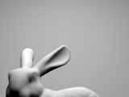
Direct illumination defines the strongly lit bunny, floor, and visibility structure. Indirect illumination is weaker and softer, especially on surfaces receiving bounced light from the colored walls. Together they produce the more complete image above.
Part 5: Adaptive Sampling
Per pixel, we track the sum and squared sum of luminance. Every 32 samples we estimate the mean and sample variance and compute a 95% confidence-interval half-width 1.96·sqrt(variance/n). We stop when it is at most 0.05·mean or the maximum sample count is reached. The final radiance is divided by the actual count, which is also stored for the sample-rate image.
Both scenes below use a 2048 spp cap, one light sample, depth 5, and 240×180 output. In the rate maps blue indicates fewer samples, green an intermediate fraction, and red the full or nearly full budget. Flat well-lit regions tend to converge early, while shadow boundaries and indirect-light regions need more work.
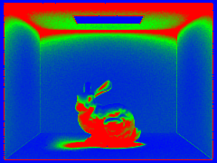
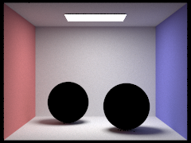
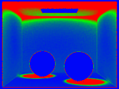